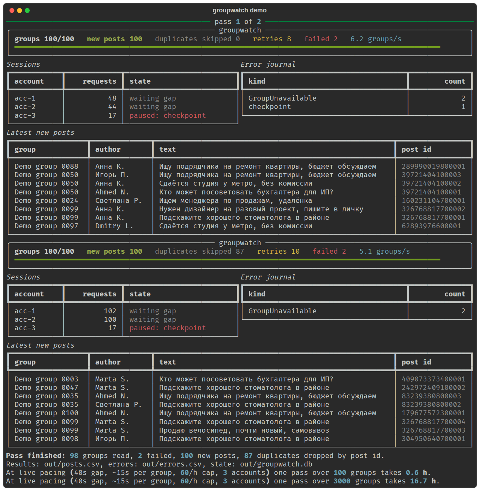

3000 групп Facebook. Новые посты в одной таблице.
Скрипт по очереди обходит группы через несколько живых браузерных сессий и записывает каждый новый пост в Google Таблицу. Если группа не открылась или аккаунт попал под проверку, это сразу видно в журнале.
| Время | Группа | Автор | Текст |
|---|
Упирается всё не в парсер, а в аккаунты
Официальный API к лентам групп Facebook закрыт, поэтому посты читает обычный браузер под обычным аккаунтом. Слишком частые заходы с одного аккаунта быстро приводят к проверке личности. Отсюда устройство: не один быстрый скрипт, а очередь, которая раздаёт группы нескольким аккаунтам и держит паузы.
- Список групптаблица с ссылками
- Очередьповторы при сбое
- Аккаунтыпаузы, лимит в час
- Браузерживая сессия
- Google Таблицатолько новые посты
- Журнал ошибокгруппа не открылась, аккаунт на проверке
Проверка аккаунта не роняет мониторинг
Аккаунт, попавший на проверку, встаёт на паузу, а его группы забирают остальные. Вы подтверждаете аккаунт вручную, и он возвращается в работу.
Повторов в таблице нет
Каждый пост узнаётся по id из его ссылки. Группу можно обходить хоть каждый час, в таблицу попадёт только то, чего там ещё не было.
Закрытые группы
В списке групп указано, какие аккаунты в них состоят. Закрытую группу открывает только тот аккаунт, который её видит.
Сколько займёт один проход
Скорость задают паузы между заходами, а не код. Один аккаунт спокойно открывает около 60 групп в час. Чтобы проверять группы чаще, нужно больше аккаунтов.
Каждая группа проверяется примерно раз в 5 часов.
Демо запускается одной командой
В репозитории есть офлайн-демо: 100 симулированных групп, 3 аккаунта, один из них ловит проверку, пара групп не открывается. Видно, как очередь отдаёт группы другим аккаунтам, как повторы отсеиваются на втором проходе и что попадает в журнал.
git clone https://github.com/liubimba/groupwatch
cd groupwatch && uv sync
uv run groupwatch demo
Начинаем с пилота на 100 групп
Вы сразу видите реальную таблицу и реальную скорость на своих группах и аккаунтах. Масштабируем только после этого.
- День 1
Получаю список групп и доступ к аккаунтам, вхожу в каждый аккаунт один раз, настраиваю таблицу и нужные колонки.
- Дни 2–3
Пилот на 100 группах. Проверяю разбор постов на ваших группах, подбираю паузы, показываю таблицу и журнал.
- Ещё 2–3 дня
Все 3000 групп, запуск по расписанию на вашем сервере, инструкция, что делать, если аккаунт попал на проверку.